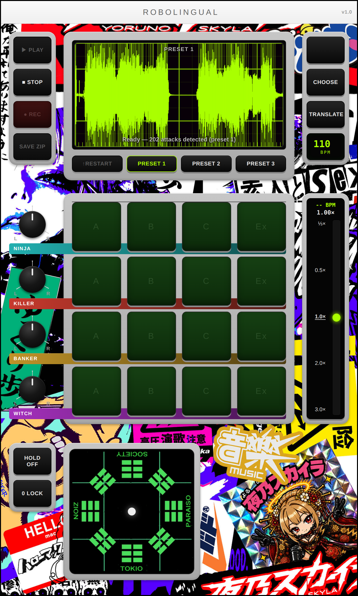
音声を読み込む
素材になる音を決めます。
プリセットを使う
PRESET 1 PRESET 2 PRESET 3 のいずれかを押すと、読み込みから生成まで自動で進みます。
自分の音源を使う
- CHOOSE を押してファイルを選びます。
- 波形が表示されたら読み込み完了です。
対応形式は WAV / MP3 / M4A / AAC / MP4 / M4V / MOV です。
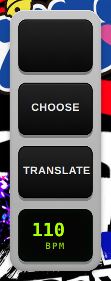
動画から音声を取り出す
動画を選ぶと、波形の中のボタンが READ VIDEO に変わります。これを押すと音声の取り出しが始まります。
動画の長さぶん時間がかかります。進み具合は画面の中央に％で出ます。終わるまで画面を開いたままにしてください。
iPhone の写真アプリから選ぶと WAITING... が出ることがあります。そのままお待ちください。
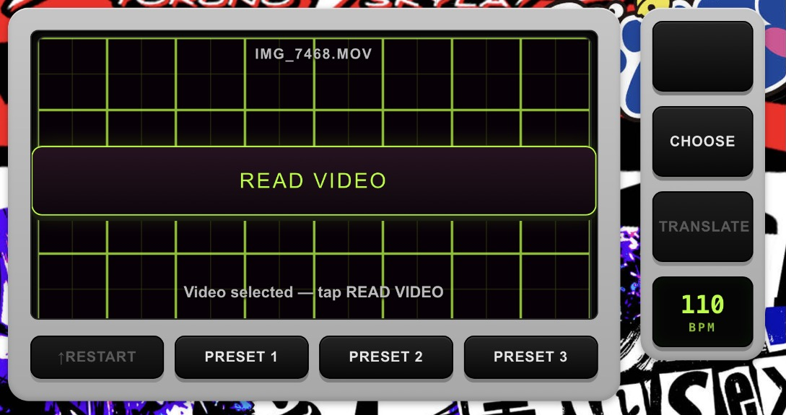
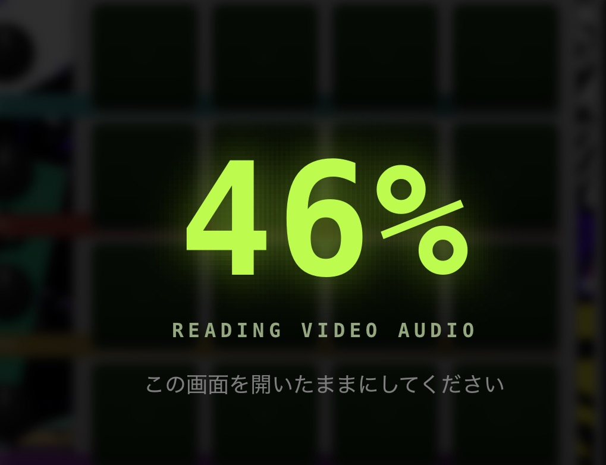
ロボ語を生成する
TRANSLATE を押すと、4キャラクター × 4バリエーション＝16パターンが生成されます。波形の下に「Ready」と表示されれば完了です。
同じ音源でも、押すたびに異なる16パターンができます。
生成前に BPM を決めておいてください。あとから変えても、生成済みのテンポは変わりません。
↑RESTART は、生成したパターンを保ったままループを頭から鳴らし直します。
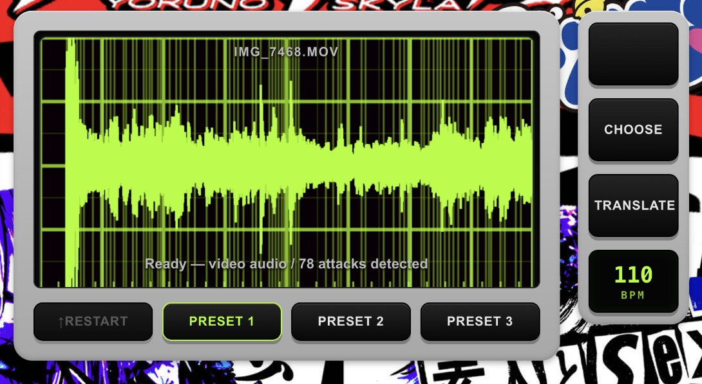
パターンを選ぶ
16個のパッドがロボリンガルの中心です。縦4段がキャラクター、横4列がバリエーションという並びになっています。
4人のキャラクター
| 段 | 性格 |
|---|---|
| NINJA | しなやか。伸ばしとピッチベンドが主役。 |
| KILLER | 硬く攻撃的。短く密な連打。 |
| BANKER | 生真面目。拍ごとに確実に打つ。 |
| WITCH | 気まぐれ。不規則に間引いて飛ばす。 |
4つのバリエーション
| 列 | 内容 |
|---|---|
| A | 短く、密で、乾いた発音。 |
| B | 長く、丸く、アタック少なめ。 |
| C | 4スライスの固定パターンが主体。 |
| Ex | ワンショットの必殺技。押した瞬間に一発だけ鳴ります。 |
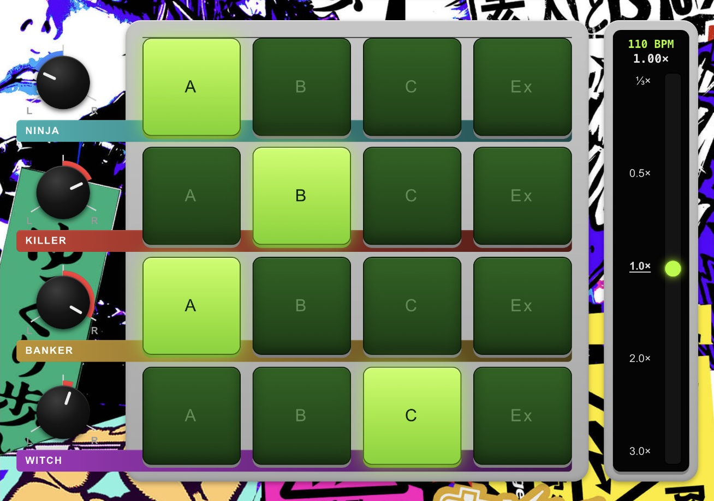
PAN
画面左の4つのノブで、キャラクターごとの左右の定位を決めます。上から NINJA / KILLER / BANKER / WITCH の順です。ノブはドラッグして回します。
ループ（A・B・C）もワンショット（Ex）も、同じキャラクターなら同じ位置から鳴ります。
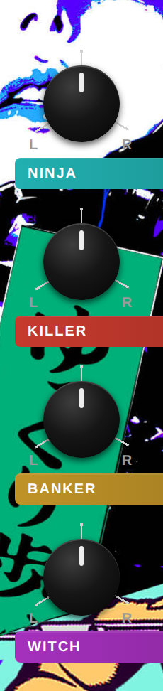
BPM
設定できる範囲は 60〜260 です。
スマートフォン・タブレット
BPM を押すと、16パッドがそのままテンキーに変わります。
- 開いた直後に数字を押すと、今の値を消して打ち直しになります。
- 今の値を直したいときは、先に ⌫ か ◀ を押します。
- ◀ ▶ でカーソルを動かし、途中に数字を挿し込めます。
- ENTER で確定、CANCEL で取り消しです。
PC
BPM の欄をクリックして、そのまま打ち込めます。テンキーは出ません。
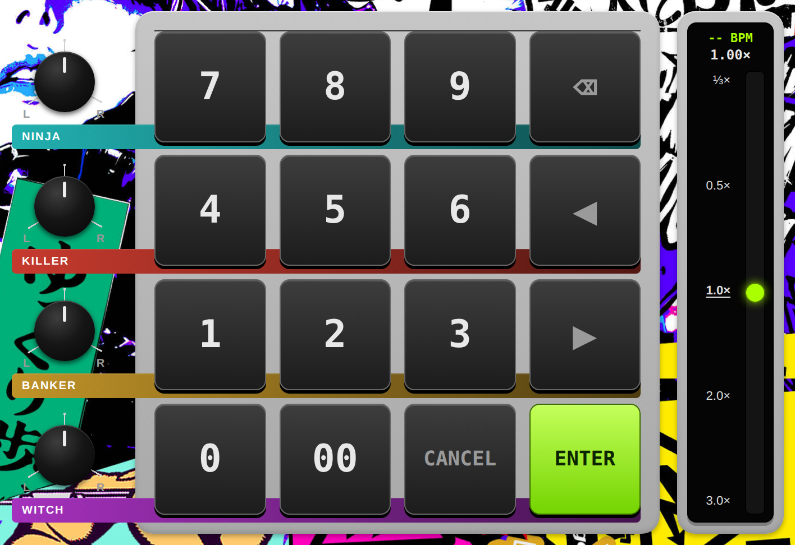
テンポスライダー
画面右のテンポスライダーで、全体の再生速度を ⅓×〜3.0× の範囲で変えます。上が遅く、下が速い配置です。生成時に設定した BPM が基準になります。
- つまみを狙う必要はありません。周りのどこを触っても掴めます。触った場所へ値が飛ぶことはありません。
- 目盛りの数字は、触れた瞬間にその速度へ飛びます。
- 二度押しで 1.0× に戻ります。
掴んだまま、別の指で16パッドや八卦盤を操作できます。
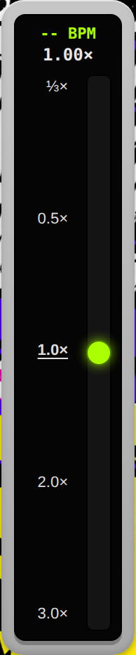
八卦盤
後天八卦をかたどった盤です。ロボ会話の方向性を決めます。中心がドライ（原音）で、外周へ向かうほど深くかかります。
| 操作子 | 動作 |
|---|---|
| HOLD OFF | 指を離すとゼロ地点に戻ります（初期状態）。 |
| HOLD ON | 指を離した場所に張り付いたままになります。 |
| 0 LOCK | 戻る先であるゼロ地点を、現在地に設定します。初期値は中央＝ドライです。 |
0 LOCK で軽く歪ませた場所をゼロ地点にしておくと、その状態を基準に出たり戻ったりできます。
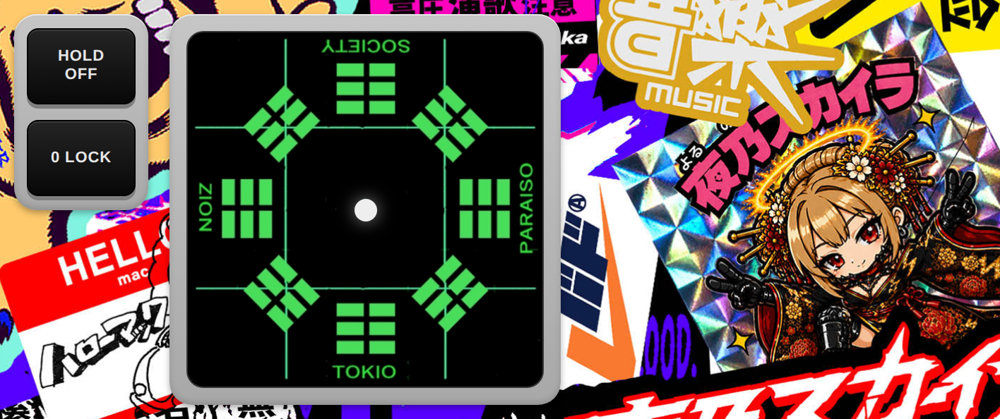
スリップループ
演奏中に波形を指で押さえると、直前に鳴っていた音がその場で繰り返されます。いわゆるビートリピートです。
1 を押せば、今さっき鳴っていた1拍がそのまま返ります。
刻みを変える
波形は2段×3列の6区画に分かれています。押さえたまま指をずらすと刻みが変わります。
| 左 | 中 | 右 | |
|---|---|---|---|
| 上段 | 1 | 1/32 | 1/16 |
| 下段 | 1/2 | 1/4 | 1/8 |
数字は1拍を何分割するかです。刻みを変えても音の出頭は動きません。指を滑らせても途切れません。
押さえている場所には、今の刻みが数字で出ます。切り取られている範囲は白く光る帯で示されます。
1/16 より細かくすると、繰り返しが速すぎて音程のついたブザーのように聴こえます。刻みとして使えるのは 1/8 あたりまでです。
指を離すと元の演奏に戻ります。時間は止まっていないので、離した時点から続きます。
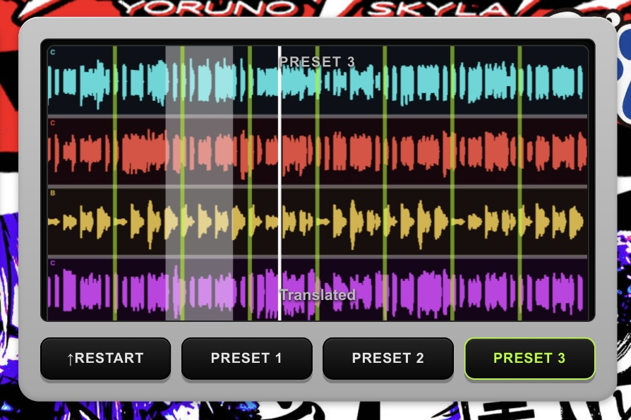
プレイヤーと保存
| 操作子 | 動作 |
|---|---|
| ▶︎ PLAY | 再生します。 |
| ■︎ STOP | 停止します。 |
| ●︎ REC | 演奏を録音します。八卦盤もスリップループも、聴こえているまま録れます。 |
| SAVE | 直前に操作していた対象に応じて内容が変わります。 |
SAVE の切り替わり
| 表示 | 保存されるもの | 条件 |
|---|---|---|
| SAVE ZIP | 生成した16パターンを個別の WAV にまとめた ZIP | 16パッドを最後に操作した場合 |
| SAVE WAV | 録音した演奏1本の WAV | PLAY / STOP / REC を最後に操作した場合 |
狙った方を保存したいときは、先にその側を一度操作してから SAVE を押してください。
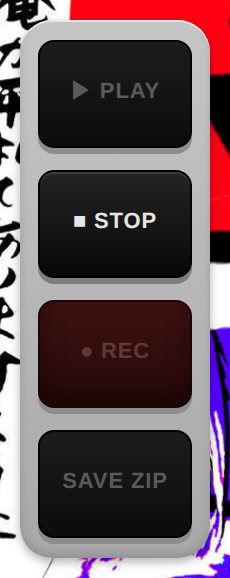
ショートカット
PC で使用できます。文字入力中は無効になります。
| キー | 動作 |
|---|---|
| Z | HOLD の切り替え |
| X | 0 LOCK |
MIDIコントローラー
市販のMIDIパッドから、16パッドと4つのPANを操作できます。画面右上に MIDI ボタンが出ていれば使えます。
割り当てる
- MIDI を押します。
- 画面に「NINJA A」のように出るので、当てたいパッドを叩きます。
- 16パッドの次はPANです。当てたいノブを回します。
- 計20個で完了です。
| ボタン | 動作 |
|---|---|
| とばす | 今の1個を割り当てずに次へ。パッドが16個ない機種で使います。 |
| やめる | そこまでの割り当てを残して終了します。 |
割り当てはブラウザに保存されます。やり直すときは、もう一度 MIDI を押してください。前の割り当ては消えます。
八卦盤とスリップループは割り当てていません。この2つは画面で触ってください。

SKIN
画面右上の SKIN から、背景の板を好きな画像に差し替えられます。
| ボタン | 動作 |
|---|---|
| 画像を選ぶ | 手持ちの画像に差し替えます。 |
| 元に戻す | 最初の板に戻します。 |
| やめる | 何もせず閉じます。 |
選んだ画像はブラウザに保存されます。元のファイルには手を付けません。

仕様
| 項目 | 値 |
|---|---|
| ループ長 | 8小節 固定 |
| BPM | 60 〜 260 |
| 再生速度 | ⅓× 〜 3.0× |
| パッド | 16（4キャラクター × A・B・C・Ex） |
| スリップ刻み | 1 / 1/2 / 1/4 / 1/8 / 1/16 / 1/32（1拍を分割） |
| スリップ素材長 | 1拍 |
| 八卦盤 | 4方向 ＋ 斜め4地獄ゾーン |
| MIDI | 16パッド ＋ PAN 4ノブ（覚えさせて割り当て） |
| 入力形式 | WAV / MP3 / M4A / AAC / MP4 / M4V / MOV |
| 書き出し | 16パターン ZIP ／ 演奏 WAV |
困ったときは
音が出ない
画面をどこか一度タップしてから ▶︎ PLAY を押してください。ダメならリロード。
パッドが押せない
「Ready」と表示されるまでお待ちください。生成が終わると押せるようになります。
生成結果が気に入らない
もう一度 TRANSLATE を押すと、別の16パターンになります。
動画を読み込むと音が小さい
波形は見やすいよう自動で拡大表示しています。音そのものは変わりません。